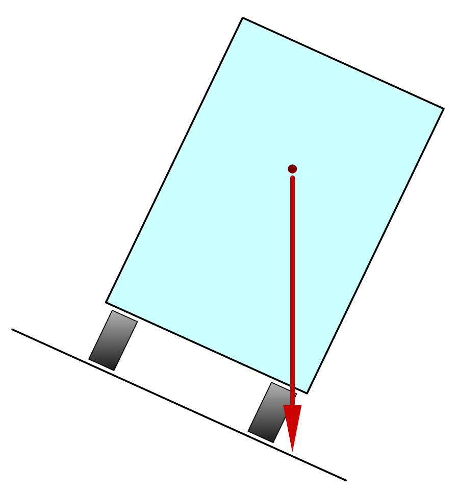

Estabilidad¶
Las estructuras que estamos estudiando, además de ser rígidas para soportar cargas sin romperse ni deformarse, deben ser estables para no volcar, doblarse u oscilar ante las fuerzas externas.
Existen varios problemas que pueden aparecer en una estructura cuando no es suficientemente estable. A continuación se explican los más comunes.
Vuelco¶
El vuelco de una estructura se produce cuando su centro de gravedad cae fuera de la base de apoyo.
- Centro de gravedad:
Es el punto donde se concentra toda la masa de la estructura. Es el lugar donde, si la apoyamos, no caerá hacia ningún lado.
En el caso de un martillo, por ejemplo, el centro de gravedad está en el mango, muy cerca de la cabeza, que es la parte más pesada.



En el camión de la figura, el centro de gravedad está marcado con un punto rojo y se encuentra bastante alto.
En la primera imagen, el centro de gravedad cae dentro de la base de apoyo, por lo que el camión es estable.
En la segunda imagen, el camión está inclinado y el centro de gravedad está a punto de salir de la base. Está cerca de volcar.
En la tercera imagen, el centro de gravedad ya no está sobre la base de apoyo. En este caso el camión es inestable y volcará.
Para que se produzca el vuelco, el centro de gravedad debe caer fuera de la zona de apoyo de la estructura sobre el suelo.
Soluciones al vuelco¶
Existen varias formas de evitar que una estructura vuelque.
- Añadir un contrapeso
Cuando una estructura se inclina demasiado hacia un lado, un contrapeso colocado en el lado contrario puede equilibrarla.
Ejemplo: Contrapesos en las grúas de obra o en los camiones-grúa.
- Ampliar la base de apoyo
Cuanto mayor sea la base de apoyo, más difícil será que el centro de gravedad salga de ella.
Ejemplos: Camiones grúa con apoyos extensibles. Coches deportivos muy anchos. Las personas separan los pies para aumentar su estabilidad cuando el suelo se mueve.
- Bajar el centro de gravedad
Cuanto más bajo esté el centro de gravedad, más difícil será que salga de la base de apoyo.
Ejemplos: En un camión, colocar los objetos pesados abajo y los ligeros arriba. Los coches deportivos son bajos para tener un centro de gravedad bajo y ser más estables.
- Anclar la estructura al suelo
Esta solución consiste en unir la estructura al suelo para aumentar su estabilidad.
Ejemplos: Vientos de una tienda de campaña. Cables de anclaje de una antena. Farolas o mástiles fijados al suelo.


{kind=link}
{kind=link}
Pandeo¶

El pandeo es una inestabilidad que se produce en barras y columnas esbeltas sometidas a compresión.
Cuando una barra es muy larga y estrecha (esbelta), corre el riesgo de doblarse y perder resistencia. Si el pandeo continúa, la barra puede llegar a partirse y fallar.
Soluciones al pandeo¶
- Hacer el perfil más grueso
Si aumentamos el grosor del perfil de la barra o columna, dejará de ser esbelta y no pandeará.
Por ejemplo, un tubo grueso con paredes finas puede ser más resistente al pandeo que una barra maciza del mismo peso. Por eso las bicicletas usan barras tubulares y las torres eléctricas emplean barras en forma de L.
- Sujetar el centro de la barra
Si se sujeta la barra por el centro para impedir que se mueva, el pandeo no llegará a producirse.
Por ejemplo, una torre de alta tensión tiene cuatro barras verticales esbeltas y otras barras horizontales y oblicuas que las unen y evitan que puedan pandear.
Oscilaciones¶
Las oscilaciones o vibraciones de una estructura pueden ser beneficiosas o perjudiciales.
En algunos casos conviene que la estructura no sea completamente rígida. Si puede flexionarse y oscilar ante una carga externa, evita romperse. Esto ocurre en los rascacielos durante un terremoto o con vientos fuertes. Los mástiles de los barcos y las alas de los aviones también oscilan para adaptarse a los esfuerzos.
En otros casos, las oscilaciones pueden aumentar poco a poco, como en un columpio, hasta que la estructura se desmorona. Esto ocurrió en el famoso puente de Tacoma Narrows, apodado Gallopin' Gertie por sus grandes oscilaciones. Un viento de solo 64 km/h lo derribó pocos meses después de su inauguración, sin causar víctimas.
Puedes ver una grabación del suceso en YouTube:
Las oscilaciones también pueden producir ruidos y vibraciones molestas, especialmente cuando coinciden con la frecuencia de resonancia de la estructura. Si una vibración se repite a esa frecuencia, la oscilación puede aumentar mucho.
Soluciones a las oscilaciones¶
- Evitar las cargas oscilantes
- Esta solución la aplican los soldados al cruzar un puente poco rígido: dejan de caminar al mismo ritmo para evitar que el puente entre en resonancia [1] .
- Amortiguar la estructura
- En vehículos y en edificios resistentes a terremotos se utilizan amortiguadores, que absorben la energía de las oscilaciones y reducen la resonancia.
Ejercicios¶
- Explica con tus palabras qué diferencia hay entre estabilidad y rigidez en una estructura.
- ¿Qué problemas de estabilidad pueden tener las estructuras?
- ¿Cuándo vuelca una estructura? ¿Qué es el centro de gravedad de una estructura?
- Dibuja una estructura poco estable al vuelco y otra que sea muy estable al vuelco.
- ¿Qué soluciones hay para evitar que una estructura vuelque? Escribe un ejemplo de cada una.
- Piensa en una estantería alta y estrecha. Enumera todos los problemas de estabilidad que puede tener y cómo los puedes solucionar.
- ¿Qué es el pandeo?
- ¿Qué soluciones hay para evitar el pandeo? Escribe un ejemplo de cada una.
- En una torre de alta tensión, identifica qué elementos evitan el pandeo y cuáles evitan el vuelco.
- ¿Cómo se pueden evitar las oscilaciones perjudiciales en una estructura?
- ¿Qué es un amortiguador y para qué sirve?
Test de la unidad¶
Unidad imprimible¶
Unidad en formato imprimible, con preguntas.
Notas
| [1] | El puente de Broughton fue un puente de suspensión en Manchester, Inglaterra, que en 1831 colapsó a raíz del paso de una tropa de soldados caminando en formación. |